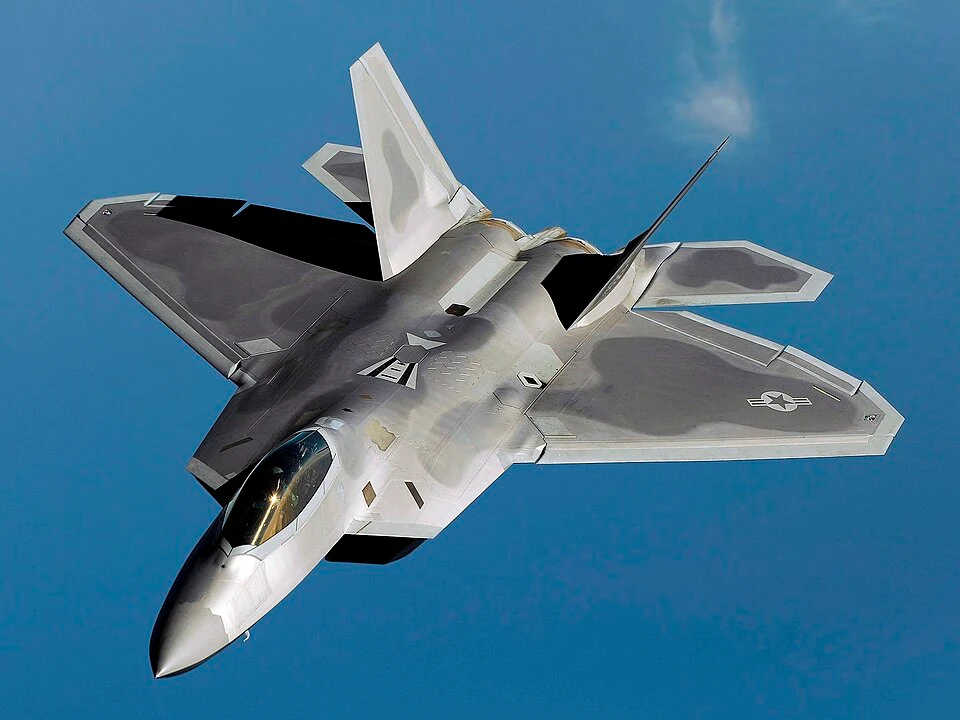

You like aircraft? You're in the right place.
Meet the F-22 Raptor
The F-22 Raptor is a fifth-generation, stealth air superiority fighter developed by Lockheed Martin for the United States Air Force.
It was designed to dominate enemy airspace with unmatched speed, maneuverability, and stealth, and also has strong ground-attack, electronic warfare, and signal intelligence capabilities.
Beautiful isn't it? But it's also deadly.
- Top speed: Mach 2.25 (2,414 km/h / 1,500 mph)
- Engines: 2 × Pratt & Whitney F119-PW-100 turbofans with thrust vectoring
- Range: 1,850 miles (2,960 km) with external tanks; 800 miles combat radius
- Weapons(internal): 6x AIM-120 AMRAAM(Advanced Medium-Range Air-to-Air Missile)
Meet the Sukhoi Su-57
The Sukhoi Su-57 is Russia’s current fifth-generation multirole stealth fighter, designed to compete with the U.S. F-22 Raptor and F-35 Lightning II.
It was developed by the Sukhoi Design Bureau as part of the PAK FA program, with the first flight in 2010 and entry into limited service in 2020.
A symbol of Russian air superiority.
- Top speed: Mach 2 (about 2,140 km/h / 1,330 mph)
- Engines: AL-41F1 engines (Product 117)
- Range: Approx. 3,500 km (2,175 miles) without refueling
- Weapons(internal): 4x R-77M (medium-range BVR missiles) in main bays - 2× R-74M2 (short-range IR missiles) in side bays